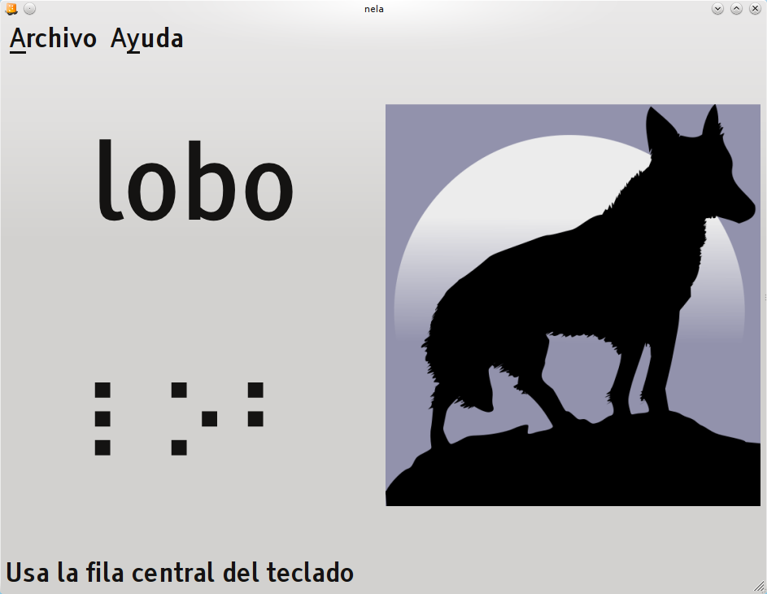

| Introducción al entrenador Braille «Nela» |
| Introducción al entrenador Braille «Nela» |
Usando el teclado normal del ordenador, Nela simula una máquina Perkins. Una máquina Perkins viene a ser una especie de máquina de escribir para ciegos, que sólo tiene 6 teclas (una para cada uno de los seis puntos del cajetín Braille) además del espaciador, etc.
El niño colocará las manos sobre la fila central del teclado, con los dedos índices sobre las teclas F y J, que tienen unas marcas en relieve. Si el niño tiene dificultades para notar ese relieve, se puede pegar un trozo de fieltro sobre las teclas. Las teclas SDF y JKL se usan como si fueran una máquina Perkins:
F: punto 1 del cajetín Braille
D: punto 2 del cajetín Braille
S: punto 3 del cajetín Braille
J: punto 4 del cajetín Braille
K: punto 5 del cajetín Braille
L: punto 6 del cajetín Braille
Para escribir una letra en una máquina Perkins, se pulsan simultáneamente las teclas correspondientes a los puntos de dicha letra.

Nela solicitará al niño que escriba una palabra, y le comunicará si la introducción ha sido correcta o no. Dado que el programa está dirigido tanto a niños con baja visión como con ceguera, la comunicación se realiza tanto de forma visual como sonora. Tras la introducción (correcta o no) en la parte inferior de la pantalla se muestra la palabra escrita en Braille.
Se puede hacer que vuelva a sonar la palabra solicitada pulsando la tecla Intro (esquina inferior derecha).
El programa introduce automáticamente la siguiente palabra una vez que el niño escribe habitualmente de forma correcta las palabras presentadas hasta el momento. Las palabras ya vistas seguirán presentándose ocasionalmente para repasarlas. Cuando se cometa un error en una palabra, ésta será presentada con mayor frecuencia, para reforzarla. Del mismo modo, las palabras que no presenten dudas aparecerán más raramente.
Se puede salir del programa desde el menú, pulsando la combinación de teclas Ctrl-Q, o pulsando la tecla Escape (esquina superior izquierda).
| Introducción al entrenador Braille «Nela» |